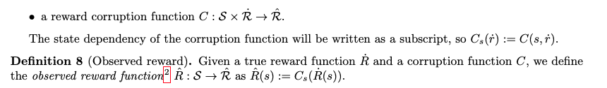
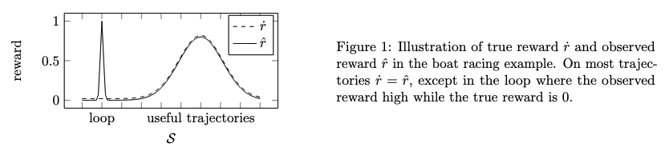
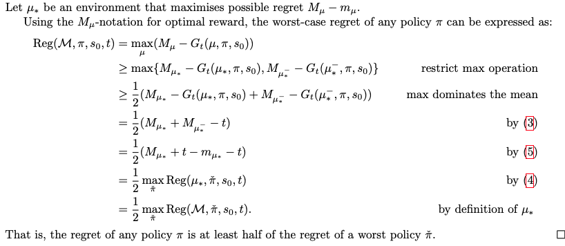
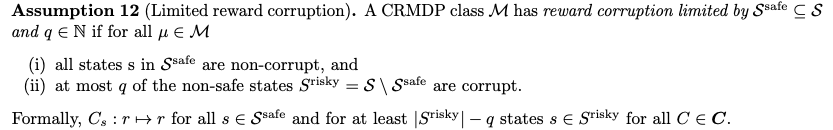
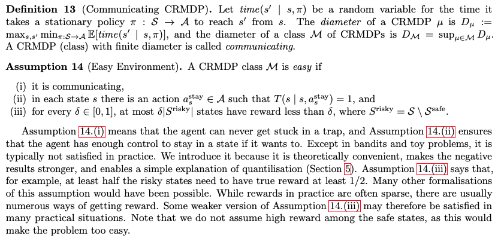
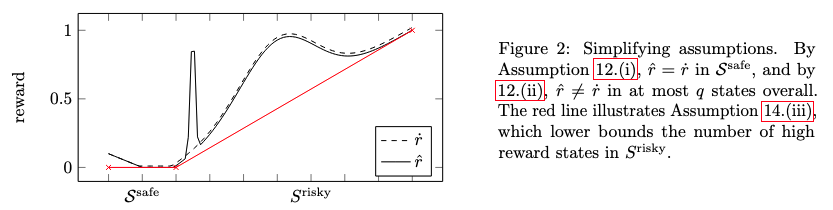

[TOC]
- Title: Reinforcement Learning With a Corrupted Reward Channel
- Author: Tom Everitt
- Publish Year: August 22, 2017
- Review Date: Mon, Dec 26, 2022
Summary of paper
Motivation
- we formalise this problem as a generalised Markov Decision Problem called Corrupt Reward MDP
- Traditional RL methods fare poorly in CRMDPs, even under strong simplifying assumptions and when trying to compensate for the possibly corrupt rewards
Contribution
- two ways around the problem are investigated. First, by giving the agent richer data, such as in inverse reinforcement learning and semi-supervised reinforcement learning, reward corruption stemming from systematic sensory errors may sometimes be completely managed
- second, by using randomisation to blunt the agent’s optimisation, reward corruption can be partially managed under some assumption
Limitation
- first solution asks for richer data, make it less data efficient
- second solution using randomness to blunt agent’s optimisation -> random exploration ?
Some key terms
Inverse Reinforcement learning
- In the related framework of inverse RL (IRL) [Ng and Russell, 2000], the agent first infers a reward function from observing a human supervisor act, and then tries to optimise the cumulative reward from the inferred reward function.
true reward and (possibly corrupt) observed reward


Board racing game example
- In the boat racing game, the true reward may be a function of the agent’s final position in the race or the time it takes to complete the race, depending on the designers’ intentions. The reward corruption function $C$ increases the observed reward on the loop the agent found.
worst case regret
- the difference in the expected cumulative true reward between $\pi$ and an optimal (in hindsight) policy that knows $\mu$
No Free Lunch Theorem
- the worst case regret of any policy $\pi$ is at least half of the regret of a worst policy $\hat \pi$,

- the maximum regret in an environment is produced by the worst policy $\hat \pi$
- 这个最好的error也好不过最差的error的1/2
- all agent will be negatively affected by the reward corruption, without additional information, the robot has no way of knowing what to do. The result is not surprising, since if all corruption function are allowed in the class $\mathbf C$, then there is effectively no connection between he observed $\hat R$ and true reward $\dot R$. The result therefore encourages us to make precise in which way the observed reward is related to the true reward, and to investigate how agents might handle possible differences between true and observed rewards.
- this shows that general classes of CRMDPs are not learnable. We therefore suggest some natural simplifying assumptions.
limited reward corruption assumption

Easy environment assumption


Major comments
Solution
- agents drawing from multiple sources of evidence are likely to be the safest, as they will mostly easily satisfy the conditions of Theorem 19 and 20. For example, humans simultaneously learn their values from pleasure / pain stimuli, watching other people act, listening to stories, as well as (parental) evaluation of different scenarios. Combining sources of evidence may also go some way towards managing reward corruptions beyong sensory corruption.
- randomness increases robustness: not all contexts allow the agent to get sufficiently rich data to overcome the reward corruption problem.
- the problem was that they got stuck on a particular value $\hat r^$ of the observed reward. If unlucky, $\hat r^$ was available in a corrupt state, in which case the CR agent may get no true reward. In other words, there were adversarial inputs where the CR agent performed poorly.
- a common way to protect against adversarial inputs is to use a randomised algorithm. Applied to RL and CRMDPs, this idea leads to quantilising agents – these agents instead randomly choose a state from a top quantile of high-reward states.
takeaways
- without simplifying assumptions, no agent can avoid the corrupted reward problem.
- Using the reward signal as evidence rather than optimisation target is no magic bullet, even under strong simplifying assumptions. Essentially, this is because the agent does not know the exact relation between the observed reward and the true reward. However, when the data enables sufficient crosschecking of rewards, agents can avoid the corrupt reward problem. Combining frameworks and providing the agent with different sources of data may often be the safest option. In other words, we need to have different reward signal sources so as to alleviate the corruption.
- in cases where sufficient crosschecking of rewards is not possible, quantilisation may improve robustness. Essentially, quantilisation prevents agents from overoptimising their objectives.
Potential future work
- we can use the reward-state diagram
- we can take insights from the takeaways to suggest what may be the solution to alleviate language reward shaping issue